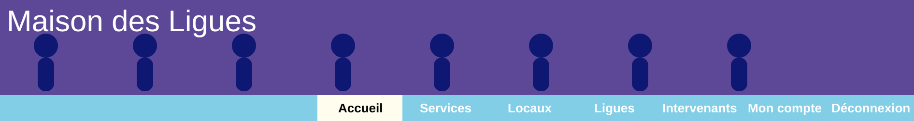
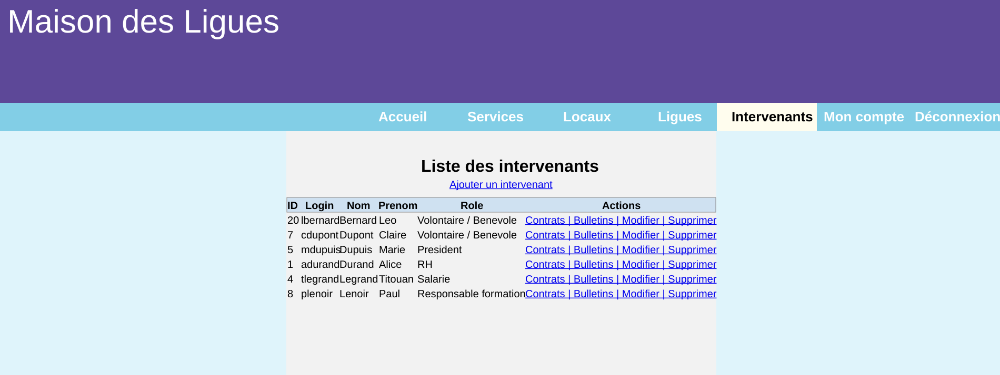

AP 3.1 - Mettre à disposition des utilisateurs un service informatique
Projet Scolaire BTS SIO
Dans le cadre du projet AP 3.1 du BTS SIO, j'ai développé un service web permettant la gestion des intervenants (salariés et bénévoles) et la consultation des bulletins de salaire pour la M2L.
L'objectif était de mettre à disposition des utilisateurs un espace sécurisé leur permettant d'accéder à leurs informations personnelles en ligne.
Ma mission consistait à :
développer le système d'authentification des utilisateurs,
gérer les droits d'accès selon le statut de l'utilisateur,
permettre l'upload des bulletins de salaire au format PDF,
afficher les contrats et bulletins associés à chaque salarié,
et sécuriser l'accès aux données personnelles.
J'ai également réalisé plusieurs tests afin de vérifier :
le bon fonctionnement des formulaires,
la sécurité des accès utilisateurs,
l'affichage correct des documents PDF,
et le bon fonctionnement des traitements liés à la base de données.
Ce travail m'a permis de développer des compétences en déploiement de services web, en sécurisation des accès utilisateurs et en tests d'intégration d'une application web.
Technologies et outils utilisés
PHP ObjetMVCMySQLAuthentificationGestion des rôlesUpload PDFTests fonctionnels
Captures du service mis à disposition

RH - Accueil du service

RH - Liste des intervenantsRH - Gestion des contrats